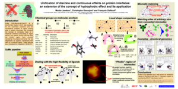
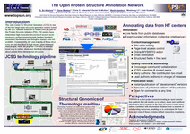

Until April 2007, I was working in Adam Godzik's group at the Burnham Institute for Medical Research in San Diego, California.
I was the webmaster of the Wikiomics.org bioinformatics wiki, which provides an open space for sharing notes, tips, links and references on bioinformatics.
I developed Pacgum, a novel method and web application for estimating the resolution of a protein 3D model independently from its origin, whether it is X-ray crystallography, NMR spectroscopy, homology modelling or any other technique. It returns a single score as well as a plot called "contact profile" that helps understand why a protein scores high or low. Ask me about the paper (that was never published) and software if interested.
You can find my publications here.
My full PhD thesis is available in French and in English: A bioinformatic system for searching functional similarities in 3D structures of proteins. It contains the full specification of the SuMo system as of version 4.4.
I also maintain a list of comparison-based approaches to the automated prediction of interesting 3D sites in a protein structure.
|  | The poster presented at ISMB 2005, shows some of the latest features of SuMo for searching ligand binding sites in protein structures: Unification of discrete and continuous effects on protein interfaces: an extension of the concept of hydrophobic effect and its application |
The slides of the presentation given at the Automated Function Prediction SIG at ISMB 2005 are available: SuMo: structure comparison of proteins focused on functional properties of ligand binding sites
|  | This poster, presented at the Automated Function Prediction meeting 2006 in San Diego, introduces The Open Structure Annotation Network (TOPSAN). TOPSAN is a website that is meant primarily to ease the process of publishing protein 3D structures from structural genomics, which initially have little or no associated biological data. It is a hybrid between a wiki (editable online, continuously), a traditional publishing system (releases of frozen versions of articles, designated editors), and a database of biological annotations (structured fields, free text, feeds from other databases, links to external tools). |
{kind=link}
{kind=link}